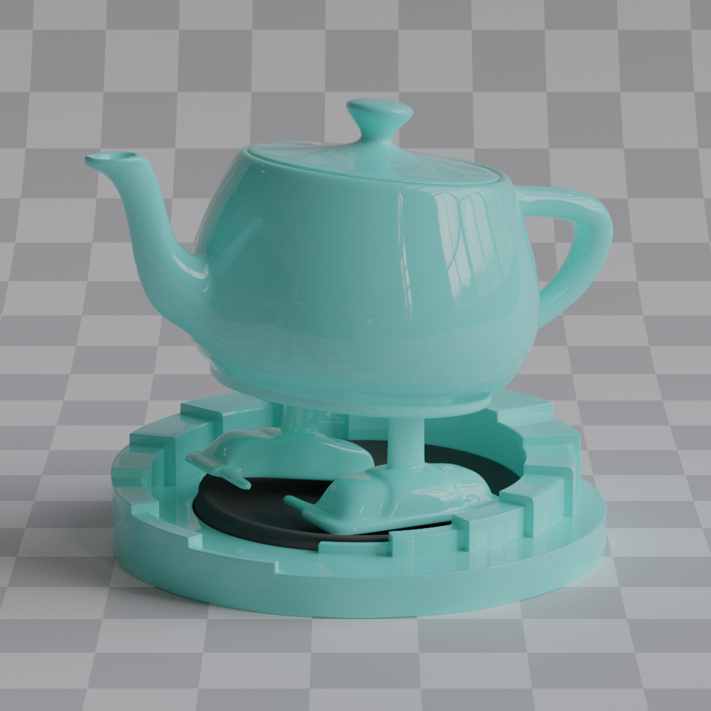
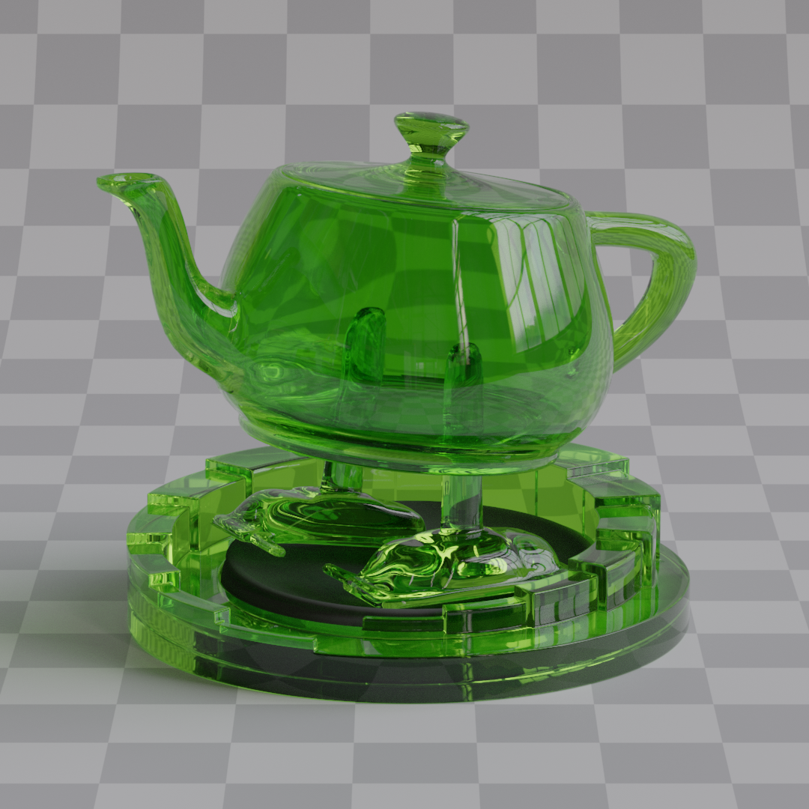
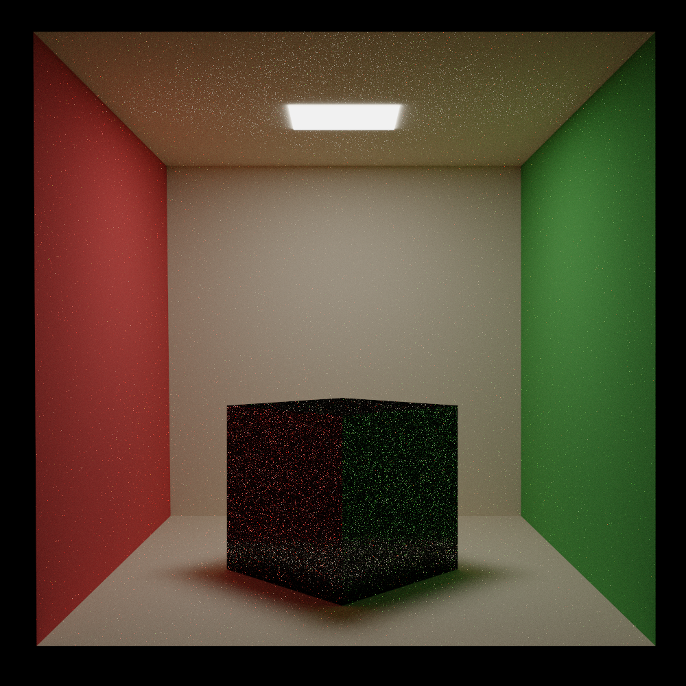
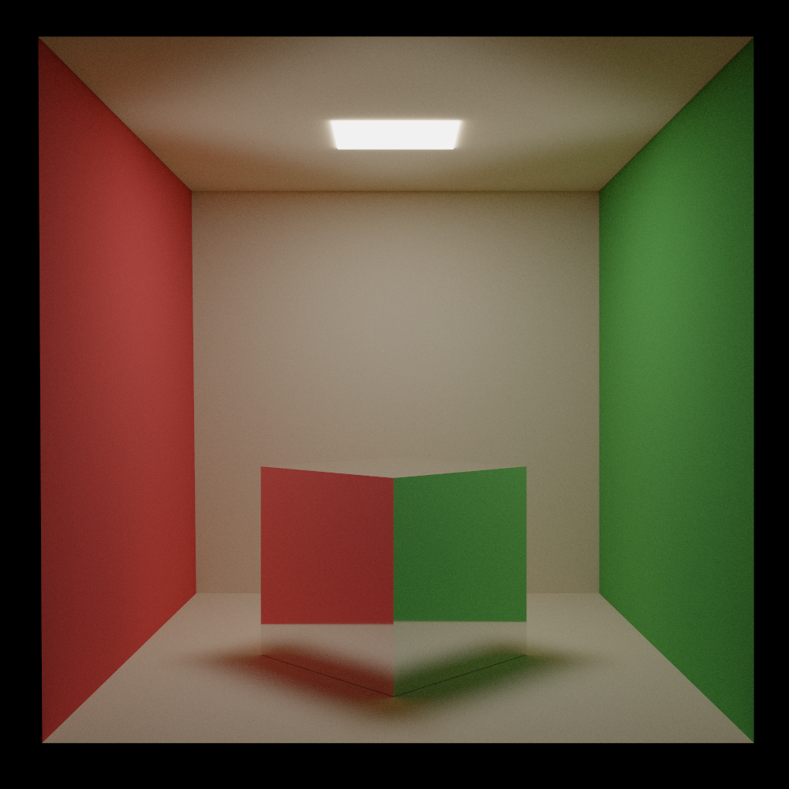
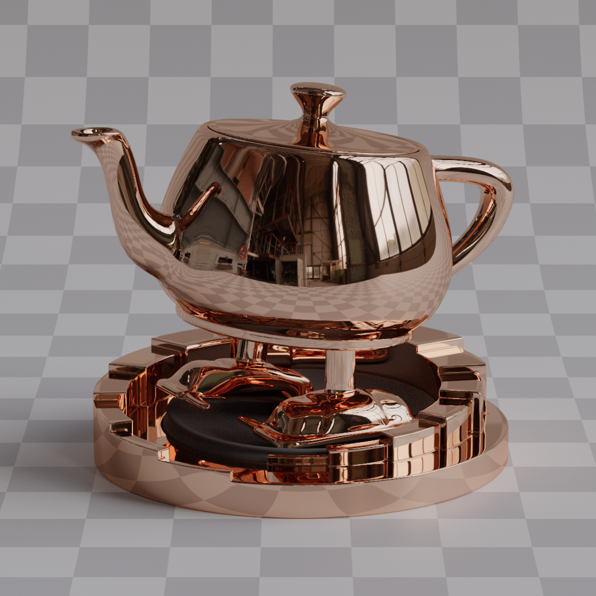
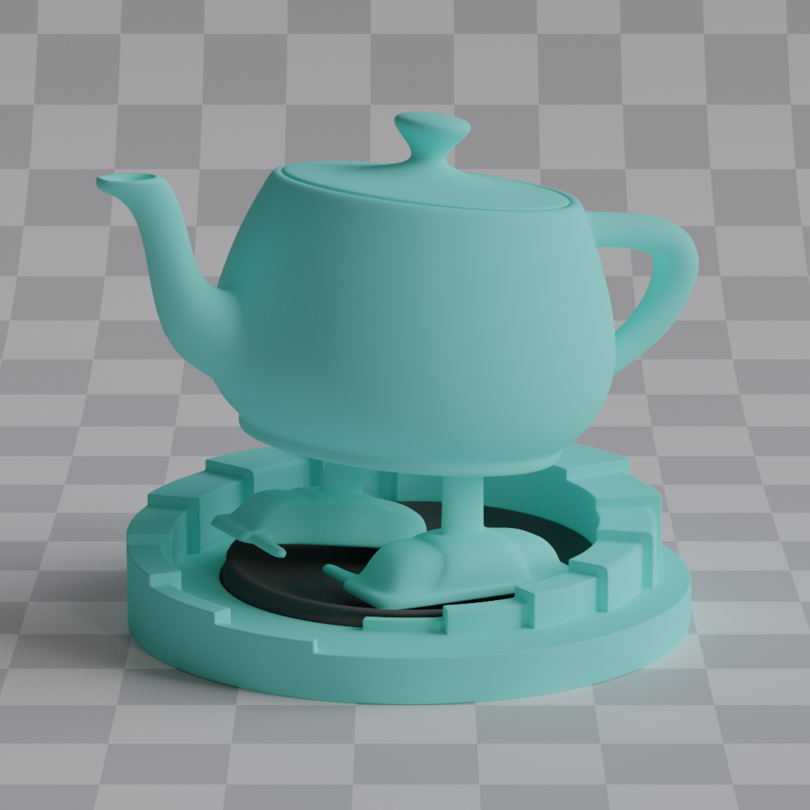
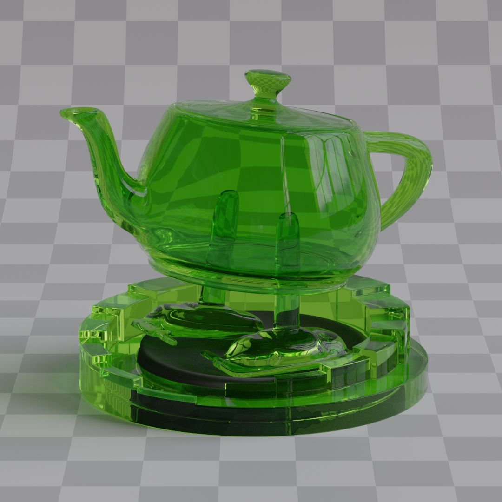
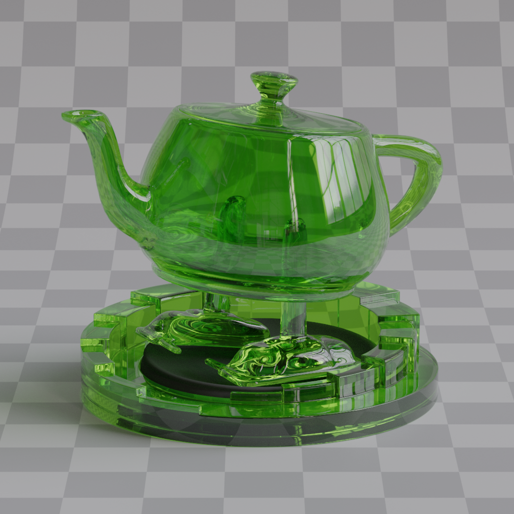
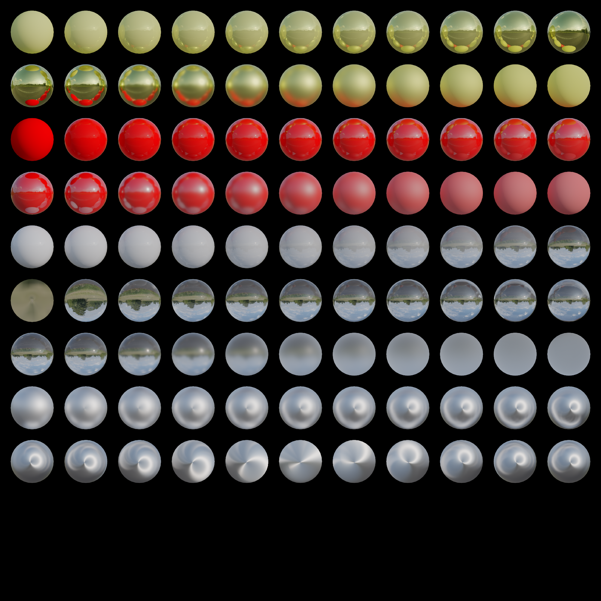

When making the BSDF I did not aim for being 100% physically correct, I just wanted something good looking, and easy to play with. That's why materials use a principled BSDF (Bidirectional Scattering Distribution Function), which means that there are no fixed material types. You edit the material property values (like metallic) and the lobes are blended between for you. So to put it into words nicely: it's a multi lobe BSDF with scalar weighted blending. This approach is useful because it allows for a lot of artistic control. I can easily import materials from different file formats like glTF or OBJ, so I don't have to roll my own format. As a reference I mostly used Blenders' cycles, I didn't aim to get everything 100% the same, because cycles is a really complex renderer, it was more like a loosely defined frame of reference. This way, I can easily create scenes in blender and export them to my renderer, since I have neither proper editor nor a custom file format. They won't look 100% the same, but they'll be similar enough to look good.
Currently supported material properties are:
Of course, I wanted the path tracer to at least be physically based, if not 100% physically accurate. So surfaces are modeled using microfacet theory, and for the microfacet distribution function I chose GGX, mostly because it's easy to implement considering the amount of resources. Outgoing directions are sampled using importance sampling, which is a low hanging fruit given that I'm already using GGX. Importance sampling is almost always included in GGX related papers and articles, and it significantly boosts the convergence speed compared to something like uniform sampling.

Uniform sampling, 50K samples per pixel

Importance sampling, 50K samples per pixel
I deviated from the standard path tracing notation ($\omega_o$ and $\omega_i$) because it felt counterintuitive for a backward path tracer. Since rays are traced from camera to scene, calling the direction they're traveling in the "incoming" direction was confusing. So I chose to use $\mathbf{V}$ for the direction to the view point and $\mathbf{L}$ for outgoing direction to the light source. It's also shorter to write so the shader code is much cleaner.
As I've mentioned before, microfacet theory is used to simulate surfaces. So when a ray hits the surface, the microsurface $\mathbf{H}$ is sampled according to the $\text{VNDF}$ for GGX. Sampling implementation follows the method described in Sampling the GGX Distribution of Visible Normals.
From code standpoint, materials are split into 3 different types:
When a ray hits the surface, one of these 3 types is sampled stochastically based on their sampling weights $w_{\text{metallic}}$, $w_{\text{dielectric}}$, $w_{\text{glass}}$. These weights are chosen more or less arbitrarily.
A direction is then sampled from the selected type to determine the outgoing direction $\mathbf{L}$, and the BSDF is evaluated to determine how much light is reflected or refracted.
The BSDF code is placed in Material.slang and is divided into two parts, stochastically importance sampling the direction (SampleBSDF(V, H, F)) and evaluation of that direction (EvaluateBSDF(V, H, L, F)). Everything there is based on Sampling the GGX Distribution of Visible Normals and Microfacet Models for Refraction through Rough Surfaces.
The sampling weight is simple here: $w_\text{metallic} = \text{metallic}$. and the the outgoing direction $\mathbf{L}$ is computed as $\mathbf{L} = \text{reflect}(-\mathbf{V}, \mathbf{H})$.
The BRDF is:
$$ f_{\text{metallic}} = \frac{F \cdot D \cdot G}{4 (\mathbf{V} \cdot \mathbf{N})(\mathbf{V} \cdot \mathbf{L})} $$
where $D$ is the anisotropic GGX distribution.
$$ D = \frac{1}{\pi \alpha_x \alpha_y (\frac{x_h^2}{\alpha_x^2} + \frac{y_h^2}{\alpha_y^2} + z_n^2)^2} $$
For masking, I use anisotropic smith function.
$$ G = G_1(\mathbf{V}) \cdot G_1(\mathbf{L}) $$
$$ G_1(\hat{v}) = \frac{1}{1 + \Lambda(\hat{v})} \text{, where } \Lambda(\hat{v}) = \frac{-1 + \sqrt{1 + \frac{\alpha_x^2 x_{\hat{v}}^2+\alpha_y^2 y_{\hat{v}}^2}{z_{\hat{v}}^2}}}{2} $$
Now for fresnel, I don't have complex indices of refraction, so I decided to just do what Blender does: blend between surface base color and specular tint color based on Schlick fresnel approximation.
$$ F = \text{lerp}(\mathbf{C}, \mathbf{S}, (1 - \mathbf{V} \cdot \mathbf{H})^5) $$
And finally the PDF is given by weighting VNDF by the jacobian of the reflect operator.
$$ p_\text{metallic} = \frac{\text{VNDF}}{4 (\mathbf{V} \cdot \mathbf{H})} $$

Roughness = 0.0
Roughness = 0.2
Roughness = 0.4
Roughness = 0.4
Anisotropy = 1.0
Unlike metals, where I only simulate reflection, here I handle both reflection and refraction, so the light can either reflect from the surface, or transmit into it. If ray got reflected then it's the same as in the metallic lobe. If light ray got transmitted, I scatter it diffusely. This creates a kind of specular lobe/layer on top of the diffuse one, so materials like varnished wood can be simulated. This specular intensity is parameterized with materials' IOR. Dielectric materials are also influenced by roughness and specular tint.
Sampling weight is $w_\text{dielectric} = (1 - \text{metallic}) \cdot (1 - \text{transmission})$.
The probability of ray being reflected is given by the fresnel equation, so the intensity of the specular layer can be parameterized by materials' IOR.
$$ \begin{gather*} \text{Given:} \quad \eta = \frac{n_i}{n_t}, \quad \cos\theta_i = \mathbf{V} \cdot \mathbf{H} \\ \sin^2\theta_t = \eta^2 \left(1 - \cos^2\theta_i\right) \\ \text{If } \sin^2\theta_t > 1: \quad F_D = 1\\ \text{Otherwise:} \quad \cos\theta_t = \sqrt{1 - \sin^2\theta_t} \\ r_s = \frac{\eta \cos\theta_t - \cos\theta_i}{\eta \cos\theta_t + \cos\theta_i} \\ r_p = \frac{\eta \cos\theta_i - \cos\theta_t}{\eta \cos\theta_i + \cos\theta_t} \\ F_D = \frac{1}{2} \left( r_s^2 + r_p^2 \right) \end{gather*} $$
A random value $\xi \sim \mathcal{U}(0, 1)$ is sampled and
$$ \begin{cases} \text{Reflect} & \xi < F_D \\ \text{Transmit} & \text{otherwise} \end{cases} $$
If ray got reflected, outgoing direction is computed the same way as for metallic $\mathbf{L} = \text{reflect}(-\mathbf{V}, \mathbf{H})$.
If ray got transmitted, I use Lambertian reflection. I decided to use lambert because honestly I see no major difference in other diffuse models like oren-nayar, sure they're more physically accurate, but lambert is simple and suits my needs. Outgoing direction $\mathbf{L}$ is computed by sampling a random vector on a hemisphere with cosine weighted distribution.
Reflection is evaluated in pretty much the same way as metallic.
$$ \begin{gather*} f_{\text{dielectric}}^R = \frac{F \cdot D \cdot G}{4 (\mathbf{V} \cdot \mathbf{N}) (\mathbf{L} \cdot \mathbf{N})}\\ p_\text{dielectric}^R = \frac{\text{VNDF}}{4 (\mathbf{V} \cdot \mathbf{H})} \end{gather*} $$
with the only difference being that instead of using Schlick, the $F$ factor gets changed to the specular tint color of the surface.
$$ F = \text{specularTint} $$
It isn't equal to $F_D$ because the actual fresnel equation is already included in the sampling probability, so I use $F$ factor in the equation just for tinting the color.
And if ray got transmitted, it scatters diffusely, so I'm using simple Lambertian reflection here:
$$ \begin{gather*} f_\text{dielectric}^T = \mathbf{C} \cdot \frac{1}{\pi} \\ p_\text{dielectric}^T = \frac{\mathbf{L} \cdot \mathbf{N}}{\pi} \end{gather*} $$

IOR = 1.0
IOR = 1.5
IOR = 1.5
Roughness = 0.2
IOR = 1.5
Roughness = 0.4
Sampling weight is $w_\text{glass} = (1 - \text{metallic}) \cdot \text{transmission}$.
Ideally, I could have implemented glass as part of the dielectric (since glass is also a dielectric material), then I could choose between scattering diffusely and refracting based on material's $\text{transmission}$ value, but I had to make it a separate thing due to a constraint with the energy compensation system.
The problem is that the [Turquin 2019] paper doesn't provide a method to calculate energy compensation separately for just the transmission component, it only gives the combined reflection + transmission compensation. According to it, the energy compensation lookup tables need to account for all possible light paths, and for refractive materials like glass, this includes both reflected and transmitted rays: $E_\text{ss}^S = E_\text{ss}^R + E_\text{ss}^T$. This means I need to apply the same energy compensation to both the reflection and transmission parts of the glass BSDF. So reflecting ray requires knowing whether the material will be refractive or not. I have to know whether to apply only reflection compensation (like in dielectric) or reflection + transmission compensation. So I kinda ended up with glass a separate lobe.
To determine whether the ray is reflected or refracted I use the same logic as in dielectric, a random variable $\xi \sim \mathcal{U}(0, 1)$ is sampled and compared against the fresnel, if ray got reflected, outgoing direction is computed the same way as for dielectric and metallic. And for refraction, instead of $\text{reflect}$, $\text{refract}$ is called.
$$ L = \begin{cases} \text{reflect}(-\mathbf{V}, \mathbf{H}) & \xi < F_D \\ \text{refract}(-\mathbf{V}, \mathbf{H}, \eta) & \text{otherwise} \end{cases} $$
BRDF and PDF for reflection stay the same as in dielectric, nothing is different here.
$$ \begin{gather*} f_{\text{glass}}^R = \frac{F \cdot D \cdot G}{4 (\mathbf{V} \cdot \mathbf{N}) (\mathbf{L} \cdot \mathbf{N})}\\ p_\text{glass}^R = \frac{\text{VNDF}}{4 (\mathbf{V} \cdot \mathbf{H})}\\ F = \text{specularTint} \end{gather*} $$
For refraction, instead of BRDF, BTDF is computed
$$ f_\text{glass}^T = \frac{|\mathbf{V} \cdot \mathbf{H}| |\mathbf{L} \cdot \mathbf{H}|}{|\mathbf{V} \cdot \mathbf{N}| |\mathbf{L} \cdot \mathbf{N}|} \cdot \frac{\eta^2 \cdot F \cdot G \cdot D}{(\eta(\mathbf{V} \cdot \mathbf{H}) + (\mathbf{L} \cdot \mathbf{H}))^2} $$
With fresnel being the surface base color since I want the color to be fully tinted on refraction.
$$ F = \mathbf{C} $$
The PDF also slightly changes, the same VNDF is still used, but this time instead of weighting it by the jacobian of $\text{reflect}$, it's weighted by the jacobian of $\text{refract}$
$$ p_\text{glass}^T = \frac{\text{VNDF}}{\frac{\eta^2 |\mathbf{L} \cdot \mathbf{H}|}{(\eta(\mathbf{V} \cdot \mathbf{H}) + \mathbf{L} \cdot \mathbf{H})^2}} $$

Transmission = 1.0
IOR = 1.25
Transmission = 1.0
IOR = 1.5

Transmission = 1.0
IOR = 1.75
Transmission = 1.0
IOR = 1.5
Roughness = 0.0
Transmission = 1.0
IOR = 1.5
Roughness = 0.2
Transmission = 1.0
IOR = 1.5
Roughness = 0.4
After the BxDF and PDF of each lobe have been evaluated, they have to be combined. For that I multiply each BxDF and PDF by their respective probabilities of being sampled, and then simply add them all together.
$$ \begin{gather*} f = f_\text{metallic} \cdot w_\text{metallic} + f_\text{dielectric}^R \cdot w_\text{dielectric} \cdot F_D + f_\text{dielectric}^T \cdot w_\text{dielectric} \cdot (1 - F_D) + f_\text{glass}^R \cdot w_\text{glass} \cdot F_D + f_\text{glass}^T \cdot w_\text{glass} \cdot (1 - F_D)\\ p = p_\text{metallic} \cdot w_\text{metallic} + p_\text{dielectric}^R \cdot w_\text{dielectric} \cdot F_D + p_\text{dielectric}^T \cdot w_\text{dielectric} \cdot (1 - F_D) + p_\text{glass}^R \cdot w_\text{glass} \cdot F_D + p_\text{glass}^T \cdot w_\text{glass} \cdot (1 - F_D) \end{gather*} $$
And that gives me the final BSDF $f$ and it's PDF $p$ given outgoing direction $\mathbf{L}$.
